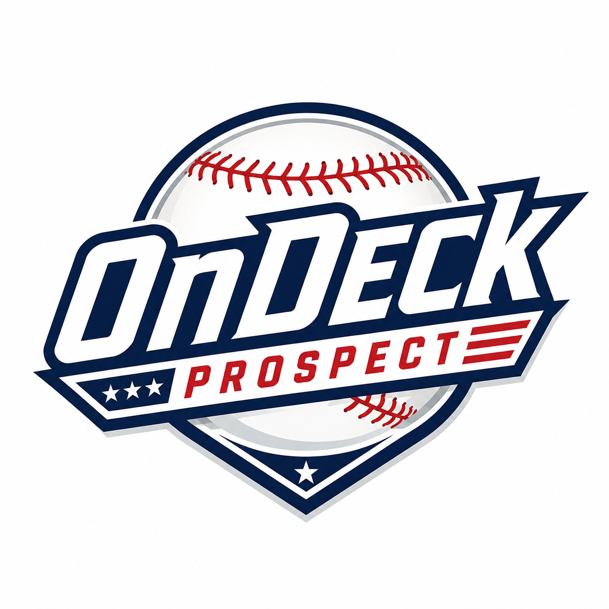

Move Score
Performance, level, age, rank movement, assignment fit, and organization context point to who may move onward and upward next.

About OnDeck Prospect
OnDeck Prospect is built to answer who is on deck next, why the move could happen, and whether the card market has already reacted.
We are not trying to rebuild another prospect ranking list. We are looking for attention before it becomes obvious.
Performance, level, age, rank movement, assignment fit, and organization context point to who may move onward and upward next.
Card data does not replace the baseball case. It confirms whether there is a tradable opportunity before attention catches up.
We track Bowman Chrome 1st autos because they are the standard prospect card for baseball collectors. One benchmark keeps comparisons clean.